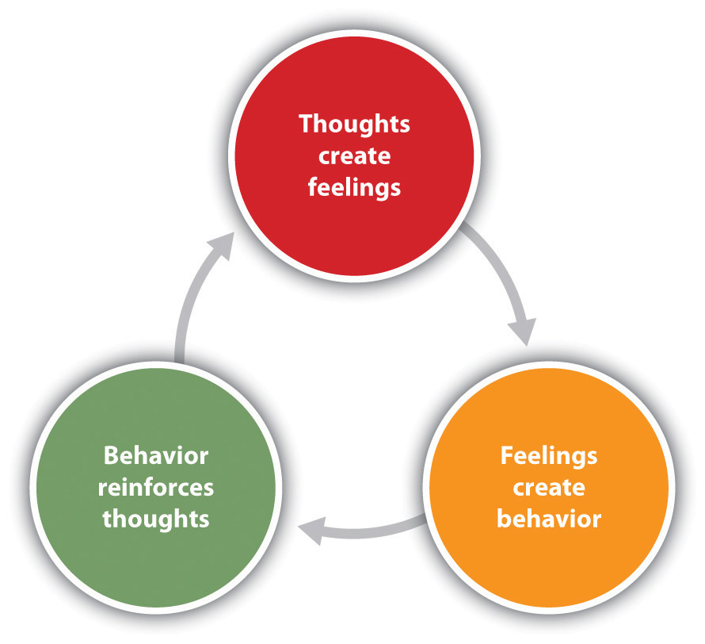
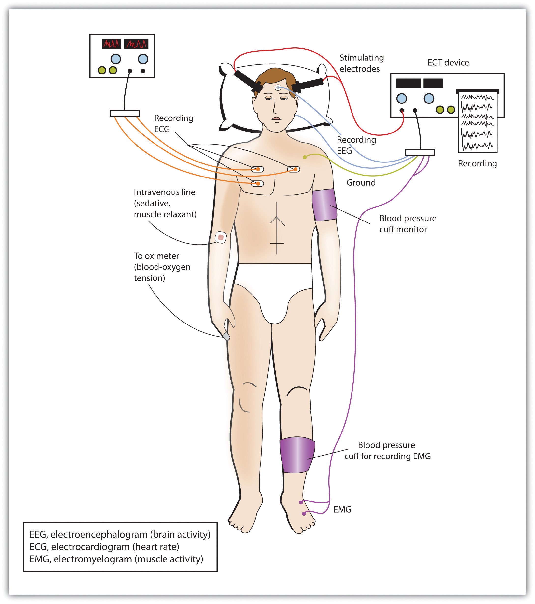
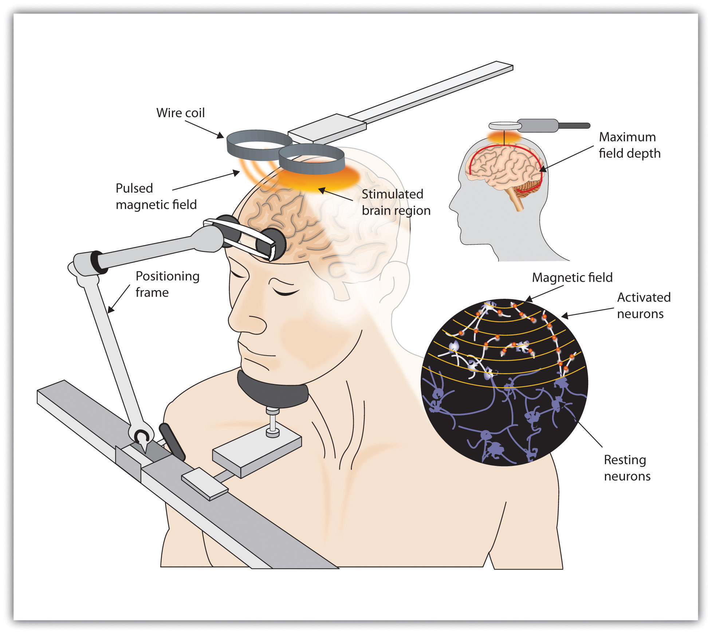

Lucien Masson, a 60-year-old Vietnam veteran from Arizona, put it simply: “Sascha is the best medicine I’ve ever had.”
Lucien is speaking about his friend, companion, and perhaps even his therapist, a Russian wolfhound named Sascha. Lucien suffers from posttraumatic stress disorder (PTSD), a disorder that has had a profoundly negative impact on his life for many years. His symptoms include panic attacks, nightmares, and road rage. Lucien has tried many solutions, consulting with doctors, psychiatrists, and psychologists, and using a combination of drugs, group therapy, and anger-management classes.
But Sascha seems to be the best therapist of all. He helps out in many ways. If a stranger gets too close to Lucien in public, Sascha will block the stranger with his body. Sascha is trained to sense when Lucien is about to have a nightmare, waking him before it starts. Before road rage can set in, Sascha gently whimpers, reminding his owner that it doesn’t pay to get upset about nutty drivers.
In the same way, former Army medic Jo Hanna Schaffer speaks of her Chihuahua, Cody: “I never took a pill for PTSD that did as much for me as Cody has done.” Persian Gulf War veteran Karen Alexander feels the same way about her Bernese mountain dog, Cindy:
She’ll come up and touch me, and that is enough of a stimulus to break the loop, bring me back to reality. Sometimes I’ll scratch my hand until it’s raw and won’t realize until she comes up to me and brings me out. She’s such a grounding influence for me.
These dramatic stories of improvement from debilitating disorders can be attributed to an alternative psychological therapy, based on established behavioral principles, provided by “psychiatric service dogs.” The dogs are trained to help people with a variety of mental disorders, including panic attacks, anxiety disorder, obsessive-compulsive disorder, and bipolar disorder. They help veterans of Iraq and Afghanistan cope with their traumatic brain injuries as well as with PTSD.
The dogs are trained to perform specific behaviors that are helpful to their owners. If the dog’s owner is depressed, the dog will snuggle up and offer physical comfort; if the owner is having a panic attack, the owner can calm himself by massaging the dog’s body. The serenity shown by the dogs in all situations seems to reassure the PTSD sufferer that all must be well. Service dogs are constant, loving companions who provide emotional support and companionship to their embattled, often isolated owners (Shim, 2008; Lorber, 2010; Alaimo, 2010; Schwartz, 2008).Shim, J. (2008, January 29). Dogs chase nightmares of war away. CNN. Retrieved from http://edition.cnn.com/2008/LIVING/personal/01/29/dogs.veterans; Lorber, J. (2010, April 3). For the battle-scarred, comfort at leash’s end. The New York Times. Retrieved from http://www.nytimes.com/2010/04/04/us/04dogs.html; Alaimo, C. A. (2010, April 11). Psychiatric service dogs use senses to aid owners. Arizona Daily Star. Retrieved from http://azstarnet.com/news/local/article_d24b5799-9b31-548c-afec-c0160e45f49c.html; Schwartz, A. N. (2008, March 16). Psychiatric service dogs, very special dogs, indeed. Dr. Schwartz’s Weblog. Retrieved from http://www.mentalhelp.net/poc/view_doc.php?type=doc&id=14844
Despite the reports of success from many users, it is important to keep in mind that the utility of psychiatric service dogs has not yet been tested, and thus would never be offered as a therapy by a trained clinician or paid for by an insurance company. Although interaction between humans and dogs can create positive physiological responses (Odendaal, 2000),Odendaal, J. S. J. (2000). Animal-assisted therapy—Magic or medicine? Journal of Psychosomatic Research, 49(4), 275–280. whether the dogs actually help people recover from PTSD is not yet known.
Psychological disorders create a tremendous individual, social, and economic drain on society. Disorders make it difficult for people to engage in productive lives and effectively contribute to their family and to society. Disorders lead to disability and absenteeism in the workplace, as well as physical problems, premature death, and suicide. At a societal level the costs are staggering. It has been estimated that the annual financial burden of each case of anxiety disorder is over $3,000 per year, meaning that the annual cost of anxiety disorders alone in the United States runs into the trillions of dollars (Konnopka, Leichsenring, Leibing, & König, 2009; Smit et al., 2006).Konnopka, A., Leichsenring, F., Leibing, E., & König, H.-H. (2009). Cost-of-illness studies and cost-effectiveness analyses in anxiety disorders: A systematic review. Journal of Affective Disorders, 114(1–3), 14–31; Smit, F., Cuijpers, P., Oostenbrink, J., Batelaan, N., de Graaf, R., & Beekman, A. (2006). Costs of nine common mental disorders: Implications for curative and preventive psychiatry. Journal of Mental Health Policy and Economics, 9(4), 193–200.
The goal of this chapter is to review the techniques that are used to treat psychological disorder. Just as psychologists consider the causes of disorder in terms of the bio-psycho-social model of illness, treatment is also based on psychological, biological, and social approaches.
A clinician may focus on any or all of the three approaches to treatment, but in making a decision about which to use, he or she will always rely on his or her knowledge about existing empirical tests of the effectiveness of different treatments. These tests, known as outcome studies, carefully compare people who receive a given treatment with people who do not receive a treatment, or with people who receive a different type of treatment. Taken together, these studies have confirmed that many types of therapies are effective in treating disorder.
Treatment for psychological disorder begins when the individual who is experiencing distress visits a counselor or therapist, perhaps in a church, a community center, a hospital, or a private practice. The therapist will begin by systematically learning about the patient’s needs through a formal psychological assessmentAn evaluation of the patient’s psychological and mental health., which is an evaluation of the patient’s psychological and mental health. During the assessment the psychologist may give personality tests such as the Minnesota Multiphasic Personal Inventory (MMPI-2) or projective tests, and will conduct a thorough interview with the patient. The therapist may get more information from family members or school personnel.
In addition to the psychological assessment, the patient is usually seen by a physician to gain information about potential Axis III (physical) problems. In some cases of psychological disorder—and particularly for sexual problems—medical treatment is the preferred course of action. For instance, men who are experiencing erectile dysfunction disorder may need surgery to increase blood flow or local injections of muscle relaxants. Or they may be prescribed medications (Viagra, Cialis, or Levitra) that provide an increased blood supply to the penis, which are successful in increasing performance in about 70% of men who take them.
After the medical and psychological assessments are completed, the therapist will make a formal diagnosis using the detailed descriptions of the disorder provided in the Diagnostic and Statistical Manual of Mental Disorders (DSM; see below). The therapist will summarize the information about the patient on each of the five DSM axes, and the diagnosis will likely be sent to an insurance company to justify payment for the treatment.
To be diagnosed with ADHD the individual must display either A or B below (American Psychiatric Association, 2000):American Psychiatric Association. (2000). Diagnostic and statistical manual of mental disorders (4th ed., text rev.). Washington, DC: Author.
A. Six or more of the following symptoms of inattention have been present for at least 6 months to a point that is disruptive and inappropriate for developmental level:
B. Six or more of the following symptoms of hyperactivity-impulsivity have been present for at least 6 months to an extent that is disruptive and inappropriate for developmental level:
If a diagnosis is made, the therapist will select a course of therapy that he or she feels will be most effective. One approach to treatment is psychotherapyProfessional treatment for psychological disorder through techniques designed to encourage communication of conflicts and insight., the professional treatment for psychological disorder through techniques designed to encourage communication of conflicts and insight. The fundamental aspect of psychotherapy is that the patient directly confronts the disorder and works with the therapist to help reduce it. Therapy includes assessing the patient’s issues and problems, planning a course of treatment, setting goals for change, the treatment itself, and an evaluation of the patient’s progress. Therapy is practiced by thousands of psychologists and other trained practitioners in the United States and around the world, and is responsible for billions of dollars of the health budget.
To many people therapy involves a patient lying on a couch with a therapist sitting behind and nodding sagely as the patient speaks. Though this approach to therapy (known as psychoanalysis) is still practiced, it is in the minority. It is estimated that there are over 400 different kinds of therapy practiced by people in many fields, and the most important of these are shown in Figure 13.2 "The Many Types of Therapy Practiced in the United States". The therapists who provide these treatments include psychiatrists (who have a medical degree and can prescribe drugs) and clinical psychologists, as well as social workers, psychiatric nurses, and couples, marriage, and family therapists.
Figure 13.2 The Many Types of Therapy Practiced in the United States

These data show the proportion of psychotherapists who reported practicing each type of therapy.
Source: Adapted from Norcross, J. C., Hedges, M., & Castle, P. H. (2002). Psychologists conducting psychotherapy in 2001: A study of the Division 29 membership. Psychotherapy: Theory, Research, Practice, Training, 39(1), 97–102.
Many people who would benefit from psychotherapy do not get it, either because they do not know how to find it or because they feel that they will be stigmatized and embarrassed if they seek help. The decision to not seek help is a very poor choice because the effectiveness of mental health treatments is well documented and, no matter where a person lives, there are treatments available (U.S. Department of Health and Human Services, 1999).U.S. Department of Health and Human Services. (1999). Mental health: A report of the surgeon general. Washington, DC: U.S. Government Printing Office.
The first step in seeking help for psychological problems is to accept the stigma. It is possible that some of your colleagues, friends, and family members will know that you are seeking help and some may at first think more negatively of you for it. But you must get past these unfair and close-minded responses. Feeling good about yourself is the most important thing you can do, and seeking help may be the first step in doing so.
One question is how to determine if someone needs help. This question is not always easy to answer because there is no clear demarcation between “normal” and “abnormal” behavior. Most generally, you will know that you or others need help when the person’s psychological state is negatively influencing his or her everyday behavior, when the behavior is adversely affecting those around the person, and when the problems continue over a period of time. Often people seek therapy as a result of a life-changing event such as diagnosis of a fatal illness, an upcoming marriage or divorce, or the death of a loved one. But therapy is also effective for general depression and anxiety, as well as for specific everyday problems.
There are a wide variety of therapy choices, many of which are free. Begin in your school, community, or church, asking about community health or counseling centers and pastoral counseling. You may want to ask friends and family members for recommendations. You’ll probably be surprised at how many people have been to counseling, and how many recommend it.
There are many therapists who offer a variety of treatment options. Be sure to ask about the degrees that the therapist has earned, and about the reputation of the center in which the therapy occurs. If you have choices, try to find a person or location that you like, respect, and trust. This will allow you to be more open, and you will get more out of the experience. Your sessions with the help provider will require discussing your family history, personality, and relationships, and you should feel comfortable sharing this information.
Remember also that confronting issues requires time to reflect, energy to get to the appointments and deal with consequential feelings, and discipline to explore your issues on your own. Success at therapy is difficult, and it takes effort.
The bottom line is that going for therapy should not be a difficult decision for you. All people have the right to appropriate mental health care just as they have a right to general health care. Just as you go to a dentist for a toothache, you may go to therapy for psychological difficulties. Furthermore, you can be confident that you will be treated with respect and that your privacy will be protected, because therapists follow ethical principles in their practices. The following provides a summary of these principles as developed by the American Psychological Association (2010).American Psychological Association. (2010). Ethical principles of psychologists and code of conduct. Retrieved from http://www.apa.org/ethics/code/index.aspx?item=7#402
Psychodynamic therapy (psychoanalysis)A psychological treatment based on Freudian and neo-Freudian personality theories in which the therapist helps the patient explore the unconscious dynamics of personality. is a psychological treatment based on Freudian and neo-Freudian personality theories in which the therapist helps the patient explore the unconscious dynamics of personality. The analyst engages with the patient, usually in one-on-one sessions, often with the patient lying on a couch and facing away. The goal of the psychotherapy is for the patient to talk about his or her personal concerns and anxieties, allowing the therapist to try to understand the underlying unconscious problems that are causing the symptoms (the process of interpretationA technique of psychotherapy in which the therapist uses the patient’s expressed thoughts to understand the underlying unconscious problems.). The analyst may try out some interpretations on the patient and observe how he or she responds to them.
The patient may be asked to verbalize his or her thoughts through free associationA technique of psychotherapy in which the therapist listens while the client talks about whatever comes to mind, without any censorship or filtering., in which the therapist listens while the client talks about whatever comes to mind, without any censorship or filtering. The client may also be asked to report on his or her dreams, and the therapist will use dream analysisA technique of psychotherapy in which the therapist listens while the client describes his or her dreams and then analyzes the symbolism of the dreams. to analyze the symbolism of the dreams in an effort to probe the unconscious thoughts of the client and interpret their significance. On the basis of the thoughts expressed by the patient, the analyst discovers the unconscious conflicts causing the patient’s symptoms and interprets them for the patient.
The goal of psychotherapy is to help the patient develop insightAn understanding in psychotherapy of the unconscious causes of the disorder.—that is, an understanding of the unconscious causes of the disorder (Epstein, Stern, & Silbersweig, 2001; Lubarsky & Barrett, 2006),Epstein J., Stern E., & Silbersweig, D. (2001). Neuropsychiatry at the millennium: The potential for mind/brain integration through emerging interdisciplinary research strategies. Clinical Neuroscience Research, 1, 10–18; Lubarsky, L., & Barrett, M. S. (2006). The history and empirical status of key psychoanalytic concepts. Annual Review of Clinical Psychology, 2, 1–19. but the patient often shows resistanceAn occurrence in psychotherapy in which the patient uses defense mechanisms to avoid the painful feelings in his or her unconscious. to these new understandings, using defense mechanisms to avoid the painful feelings in his or her unconscious. The patient might forget or miss appointments, or act out with hostile feelings toward the therapist. The therapist attempts to help the patient develop insight into the causes of the resistance. The sessions may also lead to transferenceAn occurrence in psychotherapy in which the patient redirects feelings experienced in an important personal relationship toward the therapist., in which the patient unconsciously redirects feelings experienced in an important personal relationship toward the therapist. For instance, the patient may transfer feelings of guilt that come from the father or mother to the therapist. Some therapists believe that transference should be encouraged, as it allows the client to resolve hidden conflicts and work through feelings that are present in the relationships.
One problem with traditional psychoanalysis is that the sessions may take place several times a week, go on for many years, and cost thousands of dollars. To help more people benefit, modern psychodynamic approaches frequently use shorter-term, focused, and goal-oriented approaches. In these “brief psychodynamic therapies,” the therapist helps the client determine the important issues to be discussed at the beginning of treatment and usually takes a more active role than in classic psychoanalysis (Levenson, 2010).Levenson, H. (2010). Brief dynamic therapy. Washington, DC: American Psychological Association.
Just as psychoanalysis is based on the personality theories of Freud and the neo-Freudians, humanistic therapyA psychological treatment based on the personality theories of Carl Rogers and other humanistic psychologists. is a psychological treatment based on the personality theories of Carl Rogers and other humanistic psychologists. Humanistic therapy is based on the idea that people develop psychological problems when they are burdened by limits and expectations placed on them by themselves and others, and the treatment emphasizes the person’s capacity for self-realization and fulfillment. Humanistic therapies attempt to promote growth and responsibility by helping clients consider their own situations and the world around them and how they can work to achieve their life goals.
Carl Rogers developed person-centered therapy (or client-centered therapy)An approach to treatment in which the client is helped to grow and develop as the therapist provides a comfortable, nonjudgmental environment., an approach to treatment in which the client is helped to grow and develop as the therapist provides a comfortable, nonjudgmental environment. In his book, A Way of Being (1980),Rogers, C. (1980). A way of being. New York, NY: Houghton Mifflin. Rogers argued that therapy was most productive when the therapist created a positive relationship with the client—a therapeutic alliance. The therapeutic allianceA relationship between patient and client that occurs when the therapist is genuine, treats the client with unconditional positive regard, and develops empathy with the client. is a relationship between the client and the therapist that is facilitated when the therapist is genuine (i.e., he or she creates no barriers to free-flowing thoughts and feelings), when the therapist treats the client with unconditional positive regard (i.e., values the client without any qualifications, displaying an accepting attitude toward whatever the client is feeling at the moment), and when the therapist develops empathy with the client (i.e., that he or she actively listens to and accurately perceives the personal feelings that the client experiences).
Figure 13.3
Carl Rogers was among the founders of the humanistic approach to therapy and developed the fundamentals of person-centered therapy.
Source: Courtesy of http://commons.wikimedia.org/wiki/File:Carl_Ransom_Rogers.jpg.
The development of a positive therapeutic alliance has been found to be exceedingly important to successful therapy. The ideas of genuineness, empathy, and unconditional positive regard in a nurturing relationship in which the therapist actively listens to and reflects the feelings of the client is probably the most fundamental part of contemporary psychotherapy (Prochaska & Norcross, 2007).Prochaska, J. O., & Norcross, J. C. (2007). Systems of psychotherapy: A transtheoretical analysis (6th ed.). Pacific Grove, CA: Brooks/Cole.
Psychodynamic and humanistic therapies are recommended primarily for people suffering from generalized anxiety or mood disorders, and who desire to feel better about themselves overall. But the goals of people with other psychological disorders, such as phobias, sexual problems, and obsessive-compulsive disorder (OCD), are more specific. A person with a social phobia may want to be able to leave his or her house, a person with a sexual dysfunction may want to improve his or her sex life, and a person with OCD may want to learn to stop letting his obsessions or compulsions interfere with everyday activities. In these cases it is not necessary to revisit childhood experiences or consider our capacities for self-realization—we simply want to deal with what is happening in the present.
Cognitive-behavior therapy (CBT)A structured approach to treatment that attempts to reduce psychological disorders through systematic procedures based on cognitive and behavioral principles. is a structured approach to treatment that attempts to reduce psychological disorders through systematic procedures based on cognitive and behavioral principles. As you can see in Figure 13.4 "Cognitive-Behavior Therapy", CBT is based on the idea that there is a recursive link among our thoughts, our feelings, and our behavior. For instance, if we are feeling depressed, our negative thoughts (“I am doing poorly in my chemistry class”) lead to negative feelings (“I feel hopeless and sad”), which then contribute to negative behaviors (lethargy, disinterest, lack of studying). When we or other people look at the negative behavior, the negative thoughts are reinforced and the cycle repeats itself (Beck, 1976).Beck, A. T. (1976). Cognitive therapy and the emotional disorders. New York, NY: New American Library. Similarly, in panic disorder a patient may misinterpret his or her feelings of anxiety as a sign of an impending physical or mental catastrophe (such as a heart attack), leading to an avoidance of a particular place or social situation. The fact that the patient is avoiding the situation reinforces the negative thoughts. Again, the thoughts, feelings, and behavior amplify and distort each other.
Figure 13.4 Cognitive-Behavior Therapy
Cognitive-behavior therapy (CBT) is based on the idea that our thoughts, feelings, and behavior reinforce each other and that changing our thoughts or behavior can make us feel better.
CBT is a very broad approach that is used for the treatment of a variety of problems, including mood, anxiety, personality, eating, substance abuse, attention-deficit, and psychotic disorders. CBT treats the symptoms of the disorder (the behaviors or the cognitions) and does not attempt to address the underlying issues that cause the problem. The goal is simply to stop the negative cycle by intervening to change cognition or behavior. The client and the therapist work together to develop the goals of the therapy, the particular ways that the goals will be reached, and the timeline for reaching them. The procedures are problem-solving and action-oriented, and the client is forced to take responsibility for his or her own treatment. The client is assigned tasks to complete that will help improve the disorder and takes an active part in the therapy. The treatment usually lasts between 10 and 20 sessions.
Depending on the particular disorder, some CBT treatments may be primarily behavioral in orientation, focusing on the principles of classical, operant, and observational learning, whereas other treatments are more cognitive, focused on changing negative thoughts related to the disorder. But almost all CBT treatments use a combination of behavioral and cognitive approaches.
In some cases the primary changes that need to be made are behavioral. Behavioral therapyPsychological treatment that is based on principles of learning. is psychological treatment that is based on principles of learning. The most direct approach is through operant conditioning using reward or punishment. Reinforcement may be used to teach new skills to people, for instance, those with autism or schizophrenia (Granholm et al., 2008; Herbert et al., 2005; Scattone, 2007).Granholm, E., McQuaid, J. R., Link, P. C., Fish, S., Patterson, T., & Jeste, D. V. (2008). Neuropsychological predictors of functional outcome in cognitive behavioral social skills training for older people with schizophrenia. Schizophrenia Research, 100, 133–143. doi:10.1016/j.schres.2007.11.032; Herbert, J. D., Gaudini, B. A., Rheingold, A. A., Myers, V. H., Dalrymple, K., & Nolan, E. M. (2005). Social skills training augments the effectiveness of cognitive behavioral group therapy for social anxiety disorder. Behavior Therapy, 36, 125–138; Scattone, D. (2007). Social skills interventions for children with autism. Psychology in the schools, 44, 717–726. If the patient has trouble dressing or grooming, then reinforcement techniques, such as providing tokens that can be exchanged for snacks, are used to reinforce appropriate behaviors such as putting on one’s clothes in the morning or taking a shower at night. If the patient has trouble interacting with others, reinforcement will be used to teach the client how to more appropriately respond in public, for instance, by maintaining eye contact, smiling when appropriate, and modulating tone of voice.
As the patient practices the different techniques, the appropriate behaviors are shaped through reinforcement to allow the client to manage more complex social situations. In some cases observational learning may also be used; the client may be asked to observe the behavior of others who are more socially skilled to acquire appropriate behaviors. People who learn to improve their interpersonal skills through skills training may be more accepted by others and this social support may have substantial positive effects on their emotions.
When the disorder is anxiety or phobia, then the goal of the CBT is to reduce the negative affective responses to the feared stimulus. Exposure therapyA behavioral therapy based on the classical conditioning principle of extinction in which people are confronted with a feared stimulus with the goal of decreasing their negative emotional responses to it. is a behavioral therapy based on the classical conditioning principle of extinction, in which people are confronted with a feared stimulus with the goal of decreasing their negative emotional responses to it (Wolpe, 1973).Wolpe J. (1973). The practice of behavior therapy. New York, NY: Pergamon. Exposure treatment can be carried out in real situations or through imagination, and it is used in the treatment of panic disorder, agoraphobia, social phobia, OCD, and posttraumatic stress disorder (PTSD).
In flooding, a client is exposed to the source of his fear all at once. An agoraphobic might be taken to a crowded shopping mall or someone with an extreme fear of heights to the top of a tall building. The assumption is that the fear will subside as the client habituates to the situation while receiving emotional support from the therapist during the stressful experience. An advantage of the flooding technique is that it is quick and often effective, but a disadvantage is that the patient may relapse after a short period of time.
More frequently, the exposure is done more gradually. Systematic desensitizationA behavioral treatment that combines imagining or experiencing the feared object or situation with relaxation exercises. is a behavioral treatment that combines imagining or experiencing the feared object or situation with relaxation exercises (Wolpe, 1973).Wolpe J. (1973). The practice of behavior therapy. New York, NY: Pergamon. The client and the therapist work together to prepare a hierarchy of fears, starting with the least frightening, and moving to the most frightening scenario surrounding the object (Table 13.1 "Hierarchy of Fears Used in Systematic Desensitization"). The patient then confronts her fears in a systematic manner, sometimes using her imagination but usually, when possible, in real life.
Table 13.1 Hierarchy of Fears Used in Systematic Desensitization
| Behavior | Fear rating |
|---|---|
| Think about a spider. | 10 |
| Look at a photo of a spider. | 25 |
| Look at a real spider in a closed box. | 50 |
| Hold the box with the spider. | 60 |
| Let a spider crawl on your desk. | 70 |
| Let a spider crawl on your shoe. | 80 |
| Let a spider crawl on your pants leg. | 90 |
| Let a spider crawl on your sleeve. | 95 |
| Let a spider crawl on your bare arm. | 100 |
Desensitization techniques use the principle of counterconditioning, in which a second incompatible response (relaxation, e.g., through deep breathing) is conditioned to an already conditioned response (the fear response). The continued pairing of the relaxation responses with the feared stimulus as the patient works up the hierarchy gradually leads the fear response to be extinguished and the relaxation response to take its place.
Behavioral therapy works best when people directly experience the feared object. Fears of spiders are more directly habituated when the patient interacts with a real spider, and fears of flying are best extinguished when the patient gets on a real plane. But it is often difficult and expensive to create these experiences for the patient. Recent advances in virtual reality have allowed clinicians to provide CBT in what seem like real situations to the patient. In virtual reality CBT, the therapist uses computer-generated, three-dimensional, lifelike images of the feared stimulus in a systematic desensitization program. Specially designed computer equipment, often with a head-mount display, is used to create a simulated environment. A common use is in helping soldiers who are experiencing PTSD return to the scene of the trauma and learn how to cope with the stress it invokes.
Some of the advantages of the virtual reality treatment approach are that it is economical, the treatment session can be held in the therapist’s office with no loss of time or confidentiality, the session can easily be terminated as soon as a patient feels uncomfortable, and many patients who have resisted live exposure to the object of their fears are willing to try the new virtual reality option first.
Figure 13.5
Trained clinicians use computer-generated, three-dimensional, lifelike images of spiders instead of the real thing in systematic desensitization programs to help combat client fears. Specially designed computer equipment with a head-mount display is used to create a simulated environment.
Source: Courtesy of Hunter Hoffman and Firsthand Technology, http://www.firsthand.com/creations/images/SpiderHand02_800.png.
Aversion therapyA behavioral therapy in which positive punishment is used to reduce the frequency of an undesirable behavior. is a type of behavior therapy in which positive punishment is used to reduce the frequency of an undesirable behavior. An unpleasant stimulus is intentionally paired with a harmful or socially unacceptable behavior until the behavior becomes associated with unpleasant sensations and is hopefully reduced. A child who wets his bed may be required to sleep on a pad that sounds an alarm when it senses moisture. Over time, the positive punishment produced by the alarm reduces the bedwetting behavior (Houts, Berman, & Abramson, 1994).Houts, A. C., Berman, J. S., & Abramson, H. (1994). Effectiveness of psychological and pharmacological treatments for nocturnal enuresis. Journal of Consulting and Clinical Psychology, 62(4), 737–745. Aversion therapy is also used to stop other specific behaviors such as nail biting (Allen, 1996).Allen K. W. (1996). Chronic nailbiting: A controlled comparison of competing response and mild aversion treatments. Behaviour Research and Therapy, 34, 269–272. doi:10.1016/0005-7967(95)00078-X
Alcoholism has long been treated with aversion therapy (Baker & Cannon, 1988).Baker, T. B., & Cannon, D. S. (1988). Assessment and treatment of addictive disorders. New York, NY: Praeger. In a standard approach, patients are treated at a hospital where they are administered a drug, antabuse, that makes them nauseous if they consume any alcohol. The technique works very well if the user keeps taking the drug (Krampe et al., 2006),Krampe, H., Stawicki, S., Wagner, T., Bartels, C., Aust, C., Rüther, E.,…Ehrenreich, H. (2006). Follow-up of 180 alcoholic patients for up to 7 years after outpatient treatment: Impact of alcohol deterrents on outcome. Alcoholism: Clinical and Experimental Research, 30(1), 86–95. but unless it is combined with other approaches the patients are likely to relapse after they stop the drug.
While behavioral approaches focus on the actions of the patient, cognitive therapyA psychological treatment that helps clients identify incorrect or distorted beliefs that are contributing to disorder. is a psychological treatment that helps clients identify incorrect or distorted beliefs that are contributing to disorder. In cognitive therapy the therapist helps the patient develop new, healthier ways of thinking about themselves and about the others around them. The idea of cognitive therapy is that changing thoughts will change emotions, and that the new emotions will then influence behavior (see Figure 13.4 "Cognitive-Behavior Therapy").
The goal of cognitive therapy is not necessarily to get people to think more positively but rather to think more accurately. For instance, a person who thinks “no one cares about me” is likely to feel rejected, isolated, and lonely. If the therapist can remind the person that she has a mother or daughter who does care about her, more positive feelings will likely follow. Similarly, changing beliefs from “I have to be perfect” to “No one is always perfect—I’m doing pretty good,” from “I am a terrible student” to “I am doing well in some of my courses,” or from “She did that on purpose to hurt me” to “Maybe she didn’t realize how important it was to me” may all be helpful.
The psychiatrist Aaron T. Beck and the psychologist Albert Ellis (1913–2007) together provided the basic principles of cognitive therapy. Ellis (2004)Ellis, A. (2004). Why rational emotive behavior therapy is the most comprehensive and effective form of behavior therapy. Journal of Rational-Emotive & Cognitive-Behavior Therapy, 22, 85–92. called his approach rational emotive behavior therapy (REBT) or rational emotive therapy (RET), and he focused on pointing out the flaws in the patient’s thinking. Ellis noticed that people experiencing strong negative emotions tend to personalize and overgeneralize their beliefs, leading to an inability to see situations accurately (Leahy, 2003).Leahy, R. L. (2003). Cognitive therapy techniques: A practitioner’s guide. New York, NY: Guilford Press. In REBT, the therapist’s goal is to challenge these irrational thought patterns, helping the patient replace the irrational thoughts with more rational ones, leading to the development of more appropriate emotional reactions and behaviors.
Figure 13.6

Aaron Beck and Albert Ellis were pioneers in cognitive therapy.
Sources: Beck photo courtesy of Michael Britt, http://www.flickr.com/photos/psychfiles/2282352636. Ellis photo courtesy of the Albert Ellis Institute, http://rebtinstitute.org/public/about-albert-ellis4.html.
Beck’s (Beck, 1995; Beck, Freeman, & Davis, 2004))Beck, J. S. (1995). Cognitive therapy: Basics and beyond. New York, NY: Guilford Press; Beck, A. T., Freeman, A., & Davis, D. D. (2004). Cognitive therapy of personality disorders (2nd ed.). New York, NY: Guilford Press. cognitive therapy was based on his observation that people who were depressed generally had a large number of highly accessible negative thoughts that influenced their thinking. His goal was to develop a short-term therapy for depression that would modify these unproductive thoughts. Beck’s approach challenges the client to test his beliefs against concrete evidence. If a client claims that “everybody at work is out to get me,” the therapist might ask him to provide instances to corroborate the claim. At the same time the therapist might point out contrary evidence, such as the fact that a certain coworker is actually a loyal friend or that the patient’s boss had recently praised him.
To this point we have considered the different approaches to psychotherapy under the assumption that a therapist will use only one approach with a given patient. But this is not the case; as you saw in Figure 13.2 "The Many Types of Therapy Practiced in the United States", the most commonly practiced approach to therapy is an eclectic therapyAn approach to treatment in which the therapist uses whichever techniques seem most useful and relevant for a given patient., an approach to treatment in which the therapist uses whichever techniques seem most useful and relevant for a given patient. For bipolar disorder, for instance, the therapist may use both psychological skills training to help the patient cope with the severe highs and lows, but may also suggest that the patient consider biomedical drug therapies (Newman, Leahy, Beck, Reilly-Harrington, & Gyulai, 2002).Newman, C. F., Leahy, R. L., Beck, A. T., Reilly-Harrington, N. A., & Gyulai, L. (2002). Clinical management of depression, hopelessness, and suicidality in patients with bipolar disorder. In C. F. Newman, R. L. Leahy, A. T. Beck, N. A. Reilly-Harrington, & L. Gyulai (Eds.), Bipolar disorder: A cognitive therapy approach (pp. 79–100). Washington, DC: American Psychological Association. doi:10.1037/10442-004 Treatment for major depressive disorder usually involves antidepressant drugs as well as CBT to help the patient deal with particular problems (McBride, Farvolden, & Swallow, 2007).McBride, C., Farvolden, P., & Swallow, S. R. (2007). Major depressive disorder and cognitive schemas. In L. P. Riso, P. L. du Toit, D. J. Stein, & J. E. Young (Eds.), Cognitive schemas and core beliefs in psychological problems: A scientist-practitioner guide (pp. 11–39). Washington, DC: American Psychological Association.
As we have seen in Chapter 12 "Defining Psychological Disorders", one of the most commonly diagnosed disorders is borderline personality disorder (BPD). Consider this description, typical of the type of borderline patient who arrives at a therapist’s office:
Even as an infant, it seemed that there was something different about Bethany. She was an intense baby, easily upset and difficult to comfort. She had very severe separation anxiety—if her mother left the room, Bethany would scream until she returned. In her early teens, Bethany became increasingly sullen and angry. She started acting out more and more—yelling at her parents and teachers and engaging in impulsive behavior such as promiscuity and running away from home. At times Bethany would have a close friend at school, but some conflict always developed and the friendship would end.
By the time Bethany turned 17, her mood changes were totally unpredictable. She was fighting with her parents almost daily, and the fights often included violent behavior on Bethany’s part. At times she seemed terrified to be without her mother, but at other times she would leave the house in a fit of rage and not return for a few days. One day, Bethany’s mother noticed scars on Bethany’s arms. When confronted about them, Bethany said that one night she just got more and more lonely and nervous about a recent breakup until she finally stuck a lit cigarette into her arm. She said “I didn’t really care for him that much, but I had to do something dramatic.”
When she was 18 Bethany rented a motel room where she took an overdose of sleeping pills. Her suicide attempt was not successful, but the authorities required that she seek psychological help.
Most therapists will deal with a case such as Bethany’s using an eclectic approach. First, because her negative mood states are so severe, they will likely recommend that she start taking antidepressant medications. These drugs are likely to help her feel better and will reduce the possibility of another suicide attempt, but they will not change the underlying psychological problems. Therefore, the therapist will also provide psychotherapy.
The first sessions of the therapy will likely be based primarily on creating trust. Person-centered approaches will be used in which the therapist attempts to create a therapeutic alliance conducive to a frank and open exchange of information.
If the therapist is trained in a psychodynamic approach, he or she will probably begin intensive face-to-face psychotherapy sessions at least three times a week. The therapist may focus on childhood experiences related to Bethany’s attachment difficulties but will also focus in large part on the causes of the present behavior. The therapist will understand that because Bethany does not have good relationships with other people, she will likely seek a close bond with the therapist, but the therapist will probably not allow the transference relationship to develop fully. The therapist will also realize that Bethany will probably try to resist the work of the therapist.
Most likely the therapist will also use principles of CBT. For one, cognitive therapy will likely be used in an attempt to change Bethany’s distortions of reality. She feels that people are rejecting her, but she is probably bringing these rejections on herself. If she can learn to better understand the meaning of other people’s actions, she may feel better. And the therapist will likely begin using some techniques of behavior therapy, for instance, by rewarding Bethany for successful social interactions and progress toward meeting her important goals.
The eclectic therapist will continue to monitor Bethany’s behavior as the therapy continues, bringing into play whatever therapeutic tools seem most beneficial. Hopefully, Bethany will stay in treatment long enough to make some real progress in repairing her broken life.
One example of an eclectic treatment approach that has been shown to be successful in treating BPD is dialectical behavioral therapy (DBT; Linehan & Dimeff, 2001).Linehan, M. M., & Dimeff, L. (2001). Dialectical behavior therapy in a nutshell. The California Psychologist, 34, 10–13. DBT is essentially a cognitive therapy, but it includes a particular emphasis on attempting to enlist the help of the patient in his or her own treatment. A dialectical behavioral therapist begins by attempting to develop a positive therapeutic alliance with the client, and then tries to encourage the patient to become part of the treament process. In DBT the therapist aims to accept and validate the client’s feelings at any given time while nonetheless informing the client that some feelings and behaviors are maladaptive, and showing the client better alternatives. The therapist will use both individual and group therapy, helping the patient work toward improving interpersonal effectiveness, emotion regulation, and distress tolerance skills.
Like other medical problems, psychological disorders may in some cases be treated biologically. Biomedical therapiesTreatments designed to reduce psychological disorder by influencing the action of the central nervous system. are treatments designed to reduce psychological disorder by influencing the action of the central nervous system. These therapies primarily involve the use of medications but also include direct methods of brain intervention, including electroconvulsive therapy (ECT), transcranial magnetic stimulation (TMS), and psychosurgery.
Psychologists understand that an appropriate balance of neurotransmitters in the brain is necessary for mental health. If there is a proper balance of chemicals, then the person’s mental health will be acceptable, but psychological disorder will result if there is a chemical imbalance. The most frequently used biological treatments provide the patient with medication that influences the production and reuptake of neurotransmitters in the central nervous system (CNS). The use of these drugs is rapidly increasing, and drug therapy is now the most common approach to treatment of most psychological disorders.
Unlike some medical therapies that can be targeted toward specific symptoms, current psychological drug therapies are not so specific; they don’t change particular behaviors or thought processes, and they don’t really solve psychological disorders. However, although they cannot “cure” disorder, drug therapies are nevertheless useful therapeutic approaches, particularly when combined with psychological therapy, in treating a variety of psychological disorders. The best drug combination for the individual patient is usually found through trial and error (Biedermann & Fleischhacker, 2009).Biedermann, F., & Fleischhacker, W. W. (2009). Antipsychotics in the early stage of development. Current Opinion Psychiatry, 22, 326–330.
The major classes and brand names of drugs used to treat psychological disorders are shown in Table 13.2 "Common Medications Used to Treat Psychological Disorders".
Table 13.2 Common Medications Used to Treat Psychological Disorders
| Class | Type | Brand names | Disorder | Notes |
|---|---|---|---|---|
| Psychostimulants | Ritalin, Adderall, Dexedrine | Attention-deficit/hyperactivity disorder (ADHD) | Very effective in most cases, at least in the short term, at reducing hyperactivity and inattention | |
| Antidepressants | Tricyclics | Elavil, Tofranil | Depression and anxiety disorders | Less frequently prescribed today than are the serotonin reuptake inhibitors (SSRIs) |
| Monamine oxidase inhibitors (MAOIs) | Ensam, Nardil, Parnate, Marpaln | Depression and anxiety disorders | Less frequently prescribed today than are the SSRIs | |
| SSRIs | Prozac, Paxil, Zoloft | Depression and anxiety disorders | The most frequently prescribed antidepressant medications; work by blocking the reuptake of serotonin | |
| Other reuptake inhibitors | Effexor, Celexa, Wellbutrin | Depression and anxiety disorders | Prescribed in some cases; work by blocking the reuptake of serotonin, norepinephrine, and dopamine | |
| Mood stabilizers | Eskalith, Lithobid, Depakene | Bipolar disorder | Effective in reducing the mood swings associated with bipolar disorder | |
| Antianxiety drugs | Tranquilizers (benzodiazepines) | Valium, Xanax | Anxiety, panic, and mood disorders | Work by increasing the action of the neurotransmitter GABA (gamma-aminobutyric acid) |
| Antipsychotics (Neuroleptics) | Thorazine, Haldol, Clozaril, Risperdal, Zyprexa | Schizophrenia | Treat the positive and, to some extent, the negative symptoms of schizophrenia by reducing the transmission of dopamine and increasing the transmission of serotonin |
Attention-deficit/hyperactivity disorder (ADHD) is frequently treated with biomedical therapy, usually along with cognitive-behavior therapy (CBT). The most commonly prescribed drugs for ADHD are psychostimulants, including Ritalin, Adderall, and Dexedrine. Short-acting forms of the drugs are taken as pills and last between 4 and 12 hours, but some of the drugs are also available in long-acting forms (skin patches) that can be worn on the hip and last up to 12 hours. The patch is placed on the child early in the morning and worn all day.
Stimulants improve the major symptoms of ADHD, including inattention, impulsivity, and hyperactivity, often dramatically, in about 75% of the children who take them (Greenhill, Halperin, & Abikof, 1999).Greenhill, L. L., Halperin, J. M., & Abikof, H. (1999). Stimulant medications. Journal of the American Academy of Child & Adolescent Psychiatry, 38(5), 503–512. But the effects of the drugs wear off quickly. Additionally, the best drug and best dosage varies from child to child, so it may take some time to find the correct combination.
It may seem surprising to you that a disorder that involves hyperactivity is treated with a psychostimulant, a drug that normally increases activity. The answer lies in the dosage. When large doses of stimulants are taken, they increase activity, but in smaller doses the same stimulants improve attention and decrease motor activity (Zahn, Rapoport, & Thompson, 1980).Zahn, T. P., Rapoport, J. L., & Thompson, C. L. (1980). Autonomic and behavioral effects of dextroamphetamine and placebo in normal and hyperactive prepubertal boys. Journal of Abnormal Child Psychology, 8(2), 145–160.
The most common side effects of psychostimulants in children include decreased appetite, weight loss, sleeping problems, and irritability as the effect of the medication tapers off. Stimulant medications may also be associated with a slightly reduced growth rate in children, although in most cases growth isn’t permanently affected (Spencer, Biederman, Harding, & O’Donnell, 1996).Spencer, T. J., Biederman, J., Harding, M., & O'Donnell, D. (1996). Growth deficits in ADHD children revisited: Evidence for disorder-associated growth delays? Journal of the American Academy of Child & Adolescent Psychiatry, 35(11), 1460–1469.
Antidepressant medicationsDrugs designed to improve moods. are drugs designed to improve moods. Although they are used primarily in the treatment of depression, they are also effective for patients who suffer from anxiety, phobias, and obsessive-compulsive disorders. Antidepressants work by influencing the production and reuptake of neurotransmitters that relate to emotion, including serotonin, norepinephrine, and dopamine. Although exactly why they work is not yet known, as the amount of the neurotransmitters in the CNS is increased through the action of the drugs, the person often experiences less depression.
The original antidepressants were the tricyclic antidepressants, with the brand names of Tofranil and Elavil, and the monamine oxidase inhibitors (MAOIs). These medications work by increasing the amount of serotonin, norepinephrine, and dopamine at the synapses, but they also have severe side effects including potential increases in blood pressure and the need to follow particular diets.
The antidepressants most prescribed today are the selective serotonin reuptake inhibitors (SSRIs), including Prozac, Paxil, and Zoloft, which are designed to selectively block the reuptake of serotonin at the synapse, thereby leaving more serotonin available in the CNS. SSRIs are safer and have fewer side effects than the tricyclics or the MAOIs (Fraser, 2000; Hollon, Thase, & Markowitz, 2002).Fraser, A. R. (2000). Antidepressant choice to minimize treatment resistance. The British Journal of Psychiatry, 176, 493; Hollon, S. D., Thase, M. E., & Markowitz, J. C. (2002). Treatment and prevention of depression. Psychological Science in the Public Interest, 3, 39–77. SSRIs are effective, but patients taking them often suffer a variety of sometimes unpleasant side effects, including dry mouth, constipation, blurred vision, headache, agitation, drowsiness, as well as a reduction in sexual enjoyment.
Recently, there has been concern that SSRIs may increase the risk of suicide among teens and young adults, probably because when the medications begin working they give patients more energy, which may lead them to commit the suicide that they had been planning but lacked the energy to go through with. This concern has led the FDA to put a warning label on SSRI medications and has led doctors to be more selective about prescribing antidepressants to this age group (Healy & Whitaker, 2003; Simon, 2006; Simon, Savarino, Operskalski, & Wang, 2006).Healy, D., & Whitaker, C. J. (2003). Antidepressants and suicide: Risk-benefit conundrums. Journal of Psychiatry & Neuroscience, 28, 331–339; Simon, G. E. (2006). The antidepressant quandary—Considering suicide risk when treating adolescent depression. The New England Journal of Medicine, 355, 2722–2723; Simon, G. E., Savarino, J., Operskalski, B., & Wang, P. S. (2006). Suicide risk during antidepressant treatment. American Journal of Psychiatry, 163, 41–47. doi:10.1176/appi.ajp.163.1.41
Because the effects of antidepressants may take weeks or even months to develop, doctors usually work with each patient to determine which medications are most effective, and may frequently change medications over the course of therapy. In some cases other types of antidepressants may be used instead of or in addition to the SSRIs. These medications also work by blocking the reuptake of neurotransmitters, including serotonin, norepinephrine, and dopamine. Brand names of these medications include Effexor and Wellbutrin.
Patients who are suffering from bipolar disorder are not helped by the SSRIs or other antidepressants because their disorder also involves the experience of overly positive moods. Treatment is more complicated for these patients, often involving a combination of antipsychotics and antidepressants along with mood stabilizing medications (McElroy & Keck, 2000).McElroy, S. L., & Keck, P. E. (2000). Pharmacologic agents for the treatment of acute bipolar mania. Biological Psychiatry, 48, 539–557. The most well-known mood stabilizer, lithium carbonate (or “lithium”), was approved by the FDA in the 1970s for treating both manic and depressive episodes, and it has proven very effective. Anticonvulsant medications can also be used as mood stabilizers. Another drug, Depakote, has also proven very effective, and some bipolar patients may do better with it than with lithium (Kowatch et al., 2000).Kowatch, R. A., Suppes, T., Carmody, T. J., Bucci, J. P., Hume, J. H., Kromelis, M.,…Rush, A. J. (2000). Effect size of lithium, divalproex sodium, and carbamazepine in children and adolescents with bipolar disorder. Journal of the American Academy of Child & Adolescent Psychiatry, 39, 713–20.
People who take lithium must have regular blood tests to be sure that the levels of the drug are in the appropriate range. Potential negative side effects of lithium are loss of coordination, slurred speech, frequent urination, and excessive thirst. Though side effects often cause patients to stop taking their medication, it is important that treatment be continuous, rather than intermittent. There is no cure for bipolar disorder, but drug therapy does help many people.
Antianxiety medicationsDrugs designed to help relieve fear or anxiety. are drugs that help relieve fear or anxiety. They work by increasing the action of the neurotransmitter GABA. The increased level of GABA helps inhibit the action of the sympathetic division of the autonomic nervous system, creating a calming experience.
The most common class of antianxiety medications is the tranquilizers, known as benzodiazepines. These drugs, which are prescribed millions of times a year, include Ativan, Valium, and Xanax. The benzodiazepines act within a few minutes to treat mild anxiety disorders but also have major side effects. They are addictive, frequently leading to tolerance, and they can cause drowsiness, dizziness, and unpleasant withdrawal symptoms including relapses into increased anxiety (Otto et al., 1993).Otto, M. W., Pollack, M. H., Sachs, G. S., Reiter, S. R., Meltzer-Brody, S., & Rosenbaum, J. F. (1993). Discontinuation of benzodiazepine treatment: Efficacy of cognitive-behavioral therapy for patients with panic disorder. American Journal of Psychiatry, 150, 1485–1490. Furthermore, because the effects of the benzodiazepines are very similar to those of alcohol, they are very dangerous when combined with it.
Until the middle of the 20th century, schizophrenia was inevitably accompanied by the presence of positive symptoms, including bizarre, disruptive, and potentially dangerous behavior. As a result, schizophrenics were locked in asylums to protect them from themselves and to protect society from them. In the 1950s, a drug called chlorpromazine (Thorazine) was discovered that could reduce many of the positive symptoms of schizophrenia. Chlorpromazine was the first of many antipsychotic drugs.
Antipsychotic drugs (neuroleptics)Drugs that treat the symptoms of schizophrenia and related disorders. are drugs that treat the symptoms of schizophrenia and related psychotic disorders. Today there are many antipsychotics, including Thorazine, Haldol, Clozaril, Risperdal, and Zyprexa. Some of these drugs treat the positive symptoms of schizophrenia, and some treat both the positive, negative, and cognitive symptoms.
The discovery of chlorpromazine and its use in clinics has been described as the single greatest advance in psychiatric care, because it has dramatically improved the prognosis of patients in psychiatric hospitals worldwide. Using antipsychotic medications has allowed hundreds of thousands of people to move out of asylums into individual households or community mental health centers, and in many cases to live near-normal lives.
Antipsychotics reduce the positive symptoms of schizophrenia by reducing the transmission of dopamine at the synapses in the limbic system, and they improve negative symptoms by influencing levels of serotonin (Marangell, Silver, Goff, & Yudofsky, 2003).Marangell, L. B., Silver, J. M., Goff, D. C., & Yudofsky, S. C. (2003). Psychopharmacology and electroconvulsive therapy. In R. E. Hales & S. C. Yudofsky (Eds.), The American Psychiatric Publishing textbook of clinical psychiatry (4th ed., pp. 1047–1149). Arlington, VA: American Psychiatric Publishing. Despite their effectiveness, antipsychotics have some negative side effects, including restlessness, muscle spasms, dizziness, and blurred vision. In addition, their long-term use can cause permanent neurological damage, a condition called tardive dyskinesia that causes uncontrollable muscle movements, usually in the mouth area (National Institute of Mental Health, 2008).National Institute of Mental Health. (2008). Mental health medications (NIH Publication No. 08-3929). Retrieved from http://www.nimh.nih.gov/health/publications/mental-health-medications/complete-index.shtml#pub4 Newer antipsychotics treat more symptoms with fewer side effects than older medications do (Casey, 1996).Casey, D. E. (1996). Side effect profiles of new antipsychotic agents. Journal of Clinical Psychiatry, 57(Suppl. 11), 40–45.
In cases of severe disorder it may be desirable to directly influence brain activity through electrical activation of the brain or through brain surgery. Electroconvulsive therapy (ECT)A medical procedure designed to alleviate psychological disorder in which electric currents are passed through the brain, deliberately triggering a brief seizure. is a medical procedure designed to alleviate psychological disorder in which electric currents are passed through the brain, deliberately triggering a brief seizure (Figure 13.7 "Electroconvulsive Therapy (ECT)"). ECT has been used since the 1930s to treat severe depression.
When it was first developed, the procedure involved strapping the patient to a table before the electricity was administered. The patient was knocked out by the shock, went into severe convulsions, and awoke later, usually without any memory of what had happened. Today ECT is used only in the most severe cases when all other treatments have failed, and the practice is more humane. The patient is first given muscle relaxants and a general anesthesia, and precisely calculated electrical currents are used to achieve the most benefit with the fewest possible risks.
ECT is very effective; about 80% of people who undergo three sessions of ECT report dramatic relief from their depression. ECT reduces suicidal thoughts and is assumed to have prevented many suicides (Kellner et al., 2005).Kellner, C. H., Fink, M., Knapp, R., Petrides, G., Husain, M., Rummans, T.,…Malur, C. (2005). Relief of expressed suicidal intent by ECT: A consortium for research in ECT study. The American Journal of Psychiatry, 162(5), 977–982. On the other hand, the positive effects of ECT do not always last; over one-half of patients who undergo ECT experience relapse within one year, although antidepressant medication can help reduce this outcome (Sackheim et al., 2001).Sackheim, H. A., Haskett, R. F., Mulsant, B. H., Thase, M. E., Mann, J. J., Pettinati, H.,…Prudic, J. (2001). Continuation pharmacotherapy in the prevention of relapse following electroconvulsive therapy: A randomized controlled trial. Journal of the American Medical Association, 285, 1299–1307. ECT may also cause short-term memory loss or cognitive impairment (Abrams, 1997; Sackheim et al., 2007).Abrams, R. (1997). Electroconvulsive therapy (3rd ed.). Oxford, England: Oxford University Press; Sackeim, H. A., Prudic, J., Fuller, R., Keilp, J., Philip, W., Lavori, P. W., & Olfson, M. (2007). The cognitive effects of electroconvulsive therapy in community settings. Neuropsychopharmacology, 32, 244–254. doi:10.1038/sj.npp.1301180
Figure 13.7 Electroconvulsive Therapy (ECT)
Today’s ECT uses precisely calculated electrical currents to achieve the most benefit with the fewest possible risks.
Although ECT continues to be used, newer approaches to treating chronic depression are also being developed. A newer and gentler method of brain stimulation is transcranial magnetic stimulation (TMS)A medical procedure designed to reduce psychological disorder that uses a pulsing magnetic coil to electrically stimulate the brain., a medical procedure designed to reduce psychological disorder that uses a pulsing magnetic coil to electrically stimulate the brain (Figure 13.8 "Transcranial Magnetic Stimulation (TMS)"). TMS seems to work by activating neural circuits in the prefrontal cortex, which is less active in people with depression, causing an elevation of mood. TMS can be performed without sedation, does not cause seizures or memory loss, and may be as effective as ECT (Loo, Schweitzer, & Pratt, 2006; Rado, Dowd, & Janicak, 2008).Loo, C. K., Schweitzer, I., & Pratt, C. (2006). Recent advances in optimizing electroconvulsive therapy. Australian and New Zealand Journal of Psychiatry, 40, 632–638; Rado, J., Dowd, S. M., & Janicak, P. G. (2008). The emerging role of transcranial magnetic stimulation (TMS) for treatment of psychiatric disorders. Directions in Psychiatry, 28(4), 315–332. TMS has also been used in the treatment of Parkinson’s disease and schizophrenia.
Figure 13.8 Transcranial Magnetic Stimulation (TMS)
TMS is a noninvasive procedure that uses a pulsing magnetic coil to electrically stimulate the brain. Recently, TMS has been used in the treatment of Parkinson’s disease.
Still other biomedical therapies are being developed for people with severe depression that persists over years. One approach involves implanting a device in the chest that stimulates the vagus nerve, a major nerve that descends from the brain stem toward the heart (Corcoran, Thomas, Phillips, & O’Keane, 2006; Nemeroff et al., 2006).Corcoran, C. D., Thomas, P., Phillips, J., & O’Keane, V. (2006). Vagus nerve stimulation in chronic treatment-resistant depression: Preliminary findings of an open-label study. The British Journal of Psychiatry, 189, 282–283; Nemeroff, C., Mayberg, H., Krahl, S., McNamara, J., Frazer, A., Henry, T.,…Brannan, S. (2006). VNS therapy in treatment-resistant depression: Clinical evidence and putative neurobiological mechanisms. Neuropsychopharmacology, 31(7), 1345–1355. When the vagus nerve is stimulated by the device, it activates brain structures that are less active in severely depressed people.
PsychosurgerySurgery that removes or destroys brain tissue in the hope of improving disorder., that is, surgery that removes or destroys brain tissue in the hope of improving disorder, is reserved for the most severe cases. The most well-known psychosurgery is the prefrontal lobotomy. Developed in 1935 by Nobel Prize winner Egas Moniz to treat severe phobias and anxiety, the procedure destroys the connections between the prefrontal cortex and the rest of the brain. Lobotomies were performed on thousands of patients. The procedure—which was never validated scientifically—left many patients in worse condition than before, subjecting the already suffering patients and their families to further heartbreak (Valenstein, 1986).Valenstein, E. (1986). Great and desperate cures: The rise and decline of psychosurgery and other radical treatments for mental illness. New York, NY: Basic Books. Perhaps the most notable failure was the lobotomy performed on Rosemary Kennedy, the sister of President John F. Kennedy, which left her severely incapacitated.
There are very few centers that still conduct psychosurgery today, and when such surgeries are performed they are much more limited in nature and called cingulotomy (Dougherty et al., 2002).Dougherty, D., Baer, L., Cosgrove, G., Cassem, E., Price, B., Nierenberg, A.,…Rauch, S. L. (2002). Prospective long-term follow-up of 44 patients who received cingulotomy for treatment-refractory obsessive-compulsive disorder. American Journal of Psychiatry, 159(2), 269. The ability to more accurately image and localize brain structures using modern neuroimaging techniques suggests that new, more accurate, and more beneficial developments in psychosurgery may soon be available (Sachdev & Chen, 2009).Sachdev, P. S., & Chen, X. (2009). Neurosurgical treatment of mood disorders: Traditional psychosurgery and the advent of deep brain stimulation. Current Opinion in Psychiatry, 22(1), 25–31.
Although the individual therapies that we have discussed so far in this chapter focus primarily on the psychological and biological aspects of the bio-psycho-social model of disorder, the social dimension is never out of the picture. Therapists understand that disorder is caused, and potentially prevented, in large part by the people with whom we interact. A person with schizophrenia does not live in a vacuum. He interacts with his family members and with the other members of the community, and the behavior of those people may influence his disease. And depression and anxiety are created primarily by the affected individual’s perceptions (and misperceptions) of the important people around them. Thus prevention and treatment are influenced in large part by the social context in which the person is living.
Practitioners sometimes incorporate the social setting in which disorder occurs by conducting therapy in groups. Group therapyPsychotherapy in which clients receive psychological treatment together with others. is psychotherapy in which clients receive psychological treatment together with others. A professionally trained therapist guides the group, usually between 6 and 10 participants, to create an atmosphere of support and emotional safety for the participants (Yalom & Leszcz, 2005).Yalom, I., & Leszcz, M. (2005). The theory and practice of group psychotherapy (5th ed.). New York, NY: Basic Books.
Group therapy provides a safe place where people come together to share problems or concerns, to better understand their own situations, and to learn from and with each other. Group therapy is often cheaper than individual therapy, as the therapist can treat more people at the same time, but economy is only one part of its attraction. Group therapy allows people to help each other, by sharing ideas, problems, and solutions. It provides social support, offers the knowledge that other people are facing and successfully coping with similar situations, and allows group members to model the successful behaviors of other group members. Group therapy makes explicit the idea that our interactions with others may create, intensify, and potentially alleviate disorders.
Group therapy has met with much success in the more than 50 years it has been in use, and it has generally been found to be as or more effective than individual therapy (McDermut, Miller, & Brown, 2001).McDermut, W., Miller, I. W., & Brown, R. A. (2001). The efficacy of group psychotherapy for depression: A meta-analysis and review of the empirical research. Clinical Psychology: Science and Practice, 8(1), 98–116. Group therapy is particularly effective for people who have life-altering illness, as it helps them cope better with their disease, enhances the quality of their lives, and in some cases has even been shown to help them live longer (American Group Psychotherapy Association, 2000).American Group Psychotherapy Association. (2000). About group psychotherapy. Retrieved from http://www.groupsinc.org/group/consumersguide2000.html
Sometimes group therapy is conducted with people who are in close relationships. Couples therapy is treatment in which two people who are cohabitating, married, or dating meet together with the practitioner to discuss their concerns and issues about their relationship. These therapies are in some cases educational, providing the couple with information about what is to be expected in a relationship. The therapy may focus on such topics as sexual enjoyment, communication, or the symptoms of one of the partners (e.g., depression).
Family therapy involves families meeting together with a therapist. In some cases the meeting is precipitated by a particular problem with one family member, such as a diagnosis of bipolar disorder in a child. Family therapy is based on the assumption that the problem, even if it is primarily affecting one person, is the result of an interaction among the people in the family.
Group therapy is based on the idea that people can be helped by the positive social relationships that others provide. One way for people to gain this social support is by joining a self-help groupA voluntary association of people who share a common desire to overcome psychological disorder or improve their well-being., which is a voluntary association of people who share a common desire to overcome psychological disorder or improve their well-being (Humphreys & Rappaport, 1994).Humphreys, K., & Rappaport, J. (1994). Researching self-help/mutual aid groups and organizations: Many roads, one journey. Applied and Preventative Psychology, 3(4), 217–231. Self-help groups have been used to help individuals cope with many types of addictive behaviors. Three of the best-known self-help groups are Alcoholics Anonymous, of which there are more than two million members in the United States, Gamblers Anonymous, and Overeaters Anonymous.
The idea behind self-groups is very similar to that of group therapy, but the groups are open to a broader spectrum of people. As in group therapy, the benefits include social support, education, and observational learning. Religion and spirituality are often emphasized, and self-blame is discouraged. Regular group meetings are held with the supervision of a trained leader.
The social aspect of disorder is also understood and treated at the community level. Community mental health servicesPsychological treatments and interventions that are distributed at the community level. The focus of community mental health services is prevention. are psychological treatments and interventions that are distributed at the community level. Community mental health services are provided by nurses, psychologists, social workers, and other professionals in sites such as schools, hospitals, police stations, drug treatment clinics, and residential homes. The goal is to establish programs that will help people get the mental health services that they need (Gonzales, Kelly, Mowbray, Hays, & Snowden, 1991).Gonzales, L. R., Kelly, J. G., Mowbray, C. T., Hays, R. B., & Snowden, L. R. (1991). Community mental health. In M. Hersen, A. E. Kazdin, & A. S. Bellack (Eds.), The clinical psychology handbook (2nd ed., pp. 762–779). Elmsford, NY: Pergamon Press.
Unlike traditional therapy, the primary goal of community mental health services is prevention. Just as widespread vaccination of children has eliminated diseases such as polio and smallpox, mental health services are designed to prevent psychological disorder (Institute of Medicine, 1994).Institute of Medicine. (1994). Reducing risks for mental disorders: Frontiers for preventive intervention research. Washington, DC: National Academy Press. Community prevention can be focused on one more of three levels: primary prevention, secondary prevention, and tertiary prevention.
Primary prevention is prevention in which all members of the community receive the treatment. Examples of primary prevention are programs designed to encourage all pregnant women to avoid cigarettes and alcohol because of the risk of health problems for the fetus, and programs designed to remove dangerous lead paint from homes.
Secondary prevention is more limited and focuses on people who are most likely to need it—those who display risk factors for a given disorder. Risk factorsThe social, environmental, and economic vulnerabilities that make it more likely than average that a given individual will develop a disorder. are the social, environmental, and economic vulnerabilities that make it more likely than average that a given individual will develop a disorder (Werner & Smith, 1992).Werner, E. E., & Smith, R. S. (1992). Overcoming the odds: High risk children from birth to adulthood. New York, NY: Cornell University Press. The following presents a list of potential risk factors for psychological disorders.
Community mental health workers practicing secondary prevention will focus on youths with these markers of future problems.
Finally, tertiary prevention is treatment, such as psychotherapy or biomedical therapy, that focuses on people who are already diagnosed with disorder.
Community prevention programs are designed to provide support during childhood or early adolescence with the hope that the interventions will prevent disorders from appearing or will keep existing disorders from expanding. Interventions include such things as help with housing, counseling, group therapy, emotional regulation, job and skills training, literacy training, social responsibility training, exercise, stress management, rehabilitation, family therapy, or removing a child from a stressful or dangerous home situation.
The goal of community interventions is to make it easier for individuals to continue to live a normal life in the face of their problems. Community mental health services are designed to make it less likely that vulnerable populations will end up in institutions or on the streets. In summary, their goal is to allow at-risk individuals to continue to participate in community life by assisting them within their own communities.
Secondary prevention focuses on people who are at risk for disorder or for harmful behaviors. Suicide is a leading cause of death worldwide, and prevention efforts can help people consider other alternatives, particularly if it can be determined who is most at risk. Determining whether a person is at risk of suicide is difficult, however, because people are motivated to deny or conceal such thoughts to avoid intervention or hospitalization. One recent study found that 78% of patients who die by suicide explicitly deny suicidal thoughts in their last verbal communications before killing themselves (Busch, Fawcett, & Jacobs, 2003).Busch, K. A., Fawcett, J., & Jacobs, D. G. (2003). Clinical correlates of inpatient suicide. Journal of Clinical Psychiatry, 64(1), 14–19.
Nock et al. (2010)Nock, M. K., Park, J. M., Finn, C. T., Deliberto, T. L., Dour, H. J., & Banaji, M. R. (2010). Measuring the suicidal mind: Implicit cognition predicts suicidal behavior. Psychological Science, 21(4), 511–517. tested the possibility that implicit measures of the association between the self-concept and death might provide a more direct behavioral marker of suicide risk that would allow professionals to more accurately determine whether a person is likely to commit suicide in comparison to existing self-report measures. They measured implicit associations about death and suicide in 157 people seeking treatment at a psychiatric emergency department.
The participants all completed a version of the Implicit Association Test (IAT), which was designed to assess the strength of a person’s mental associations between death and the self (Greenwald, McGhee, & Schwartz, 1998).Greenwald, A. G., McGhee, D. E., & Schwartz, J. L. K. (1998). Measuring individual differences in implicit cognition: The Implicit Association Test. Journal of Personality and Social Psychology, 74, 1464–1480. Using a notebook computer, participants classified stimuli representing the constructs of “death” (i.e., die, dead, deceased, lifeless, and suicide) and “life” (i.e., alive, survive, live, thrive, and breathing) and the attributes of “me” (i.e., I, myself, my, mine, and self) and “not me” (i.e., they, them, their, theirs, and other). Response latencies for all trials were recorded and analyzed, and the strength of each participant’s association between “death” and “me” was calculated.
The researchers then followed participants over the next 6 months to test whether the measured implicit association of death with self could be used to predict future suicide attempts. The authors also tested whether scores on the IAT would add to prediction of risk above and beyond other measures of risk, including questionnaire and interview measures of suicide risk. Scores on the IAT predicted suicide attempts in the next 6 months above all the other risk factors that were collected by the hospital staff, including past history of suicide attempts. These results suggest that measures of implicit cognition may be useful for determining risk factors for clinical behaviors such as suicide.
We have seen that psychologists and other practitioners employ a variety of treatments in their attempts to reduce the negative outcomes of psychological disorders. But we have not yet considered the important question of whether these treatments are effective, and if they are, which approaches are most effective for which people and for which disorders. Accurate empirical answers to these questions are important as they help practitioners focus their efforts on the techniques that have been proven to be most promising, and will guide societies as they make decisions about how to spend public money to improve the quality of life of their citizens (Hunsley & Di Giulio, 2002).Hunsley, J., & Di Giulio, G. (2002). Dodo bird, phoenix, or urban legend? The question of psychotherapy equivalence. The Scientific Review of Mental Health Practice: Objective Investigations of Controversial and Unorthodox Claims in Clinical Psychology, Psychiatry, and Social Work, 1(1), 11–22.
Psychologists use outcome researchStudies that assess the effectiveness of medical treatments., that is, studies that assess the effectiveness of medical treatments, to determine the effectiveness of different therapies. As you can see in Figure 13.10 "Outcome Research", in these studies the independent variable is the type of the treatment—for instance, whether it was psychological or biological in orientation or how long it lasted. In most cases characteristics of the client (e.g., his or her gender, age, disease severity, and prior psychological histories) are also collected as control variables. The dependent measure is an assessment of the benefit received by the client. In some cases we might simply ask the client if she feels better, and in other cases we may directly measure behavior: Can the client now get in the airplane and take a flight? Has the client remained out of juvenile detention?
Figure 13.10 Outcome Research
The design of an outcome study includes a dependent measure of benefit received by the client, as predicted by independent variables including type of treatment and characteristics of the individual.
In every case the scientists evaluating the therapy must keep in mind the potential that other effects rather than the treatment itself might be important, that some treatments that seem effective might not be, and that some treatments might actually be harmful, at least in the sense that money and time are spent on programs or drugs that do not work.
One threat to the validity of outcome research studies is natural improvement—the possibility that people might get better over time, even without treatment. People who begin therapy or join a self-help group do so because they are feeling bad or engaging in unhealthy behaviors. After being in a program over a period of time, people frequently feel that they are getting better. But it is possible that they would have improved even if they had not attended the program, and that the program is not actually making a difference. To demonstrate that the treatment is effective, the people who participate in it must be compared with another group of people who do not get treatment.
Another possibility is that therapy works, but that it doesn’t really matter which type of therapy it is. Nonspecific treatment effects occur when the patient gets better over time simply by coming to therapy, even though it doesn’t matter what actually happens at the therapy sessions. The idea is that therapy works, in the sense that it is better than doing nothing, but that all therapies are pretty much equal in what they are able to accomplish. Finally, placebo effects are improvements that occur as a result of the expectation that one will get better rather than from the actual effects of a treatment.
Thousands of studies have been conducted to test the effectiveness of psychotherapy, and by and large they find evidence that it works. Some outcome studies compare a group that gets treatment with another (control) group that gets no treatment. For instance, Ruwaard, Broeksteeg, Schrieken, Emmelkamp, and Lange (2010)Ruwaard, J., Broeksteeg, J., Schrieken, B., Emmelkamp, P., & Lange, A. (2010). Web-based therapist-assisted cognitive behavioral treatment of panic symptoms: A randomized controlled trial with a three-year follow-up. Journal of Anxiety Disorders, 24(4), 387–396. found that patients who interacted with a therapist over a website showed more reduction in symptoms of panic disorder than did a similar group of patients who were on a waiting list but did not get therapy. Although studies such as this one control for the possibility of natural improvement (the treatment group improved more than the control group, which would not have happened if both groups had only been improving naturally over time), they do not control for either nonspecific treatment effects or for placebo effects. The people in the treatment group might have improved simply by being in the therapy (nonspecific effects), or they may have improved because they expected the treatment to help them (placebo effects).
An alternative is to compare a group that gets “real” therapy with a group that gets only a placebo. For instance, Keller et al. (2001)Keller, M. B., Ryan, N. D., Strober, M., Klein, R. G., Kutcher, S. P., Birmaher, B.,…McCafferty, J. P. (2001). Efficacy of paroxetine in the treatment of adolescent major depression: A randomized, controlled trial. Journal of the American Academy of Child & Adolescent Psychiatry, 40(7), 762–772. had adolescents who were experiencing anxiety disorders take pills that they thought would reduce anxiety for 8 weeks. However, one-half of the patients were randomly assigned to actually receive the antianxiety drug Paxil, while the other half received a placebo drug that did not have any medical properties. The researchers ruled out the possibility that only placebo effects were occurring because they found that both groups improved over the 8 weeks, but the group that received Paxil improved significantly more than the placebo group did.
Studies that use a control group that gets no treatment or a group that gets only a placebo are informative, but they also raise ethical questions. If the researchers believe that their treatment is going to work, why would they deprive some of their participants, who are in need of help, of the possibility for improvement by putting them in a control group?
Another type of outcome study compares different approaches with each other. For instance, Herbert et al. (2005)Herbert, J. D., Gaudiano, B. A., Rheingold, A. A., Myers, V. H., Dalrymple, K., & Nolan, E. M. (2005). Social skills training augments the effectiveness of cognitive behavioral group therapy for social anxiety disorder. Behavior Therapy, 36(2), 125–138. tested whether social skills training could boost the results received for the treatment of social anxiety disorder with cognitive-behavioral therapy (CBT) alone. As you can see in Figure 13.11, they found that people in both groups improved, but CBT coupled with social skills training showed significantly greater gains than CBT alone.
Figure 13.11

Herbert et al. (2005) compared the effectiveness of CBT alone with CBT along with social skills training. Both groups improved, but the group that received both therapies had significantly greater gains than the group that received CBT alone.
Source: Adapted from Herbert, J. D., Gaudiano, B. A., Rheingold, A. A., Myers, V. H., Dalrymple, K., & Nolan, E. M. (2005). Social skills training augments the effectiveness of cognitive behavioral group therapy for social anxiety disorder. Behavior Therapy, 36(2), 125–138.
Other studies (Crits-Christoph, 1992; Crits-Christoph et al., 2004)Crits-Christoph, P. (1992). The efficacy of brief dynamic psychotherapy: A meta-analysis. American Journal of Psychiatry, 149, 151–158; Crits-Christoph, P., Gibbons, M. B., Losardo, D., Narducci, J., Schamberger, M., & Gallop, R. (2004). Who benefits from brief psychodynamic therapy for generalized anxiety disorder? Canadian Journal of Psychoanalysis, 12, 301–324. have compared brief sessions of psychoanalysis with longer-term psychoanalysis in the treatment of anxiety disorder, humanistic therapy with psychodynamic therapy in treating depression, and cognitive therapy with drug therapy in treating anxiety (Dalgleish, 2004; Hollon, Thase, & Markowitz, 2002).Dalgleish, T. (2004). Cognitive approaches to posttraumatic stress disorder: The evolution of multirepresentational theorizing. Psychological Bulletin, 130, 228–260; Hollon, S. D., Thase, M. E., & Markowitz, J. C. (2002). Treatment and prevention of depression. Psychological Science in the Public Interest, 3, 39–77. These studies are advantageous because they compare the specific effects of one type of treatment with another, while allowing all patients to get treatment.
Because there are thousands of studies testing the effectiveness of psychotherapy, and the independent and dependent variables in the studies vary widely, the results are often combined using a meta-analysis. A meta-analysisA statistical technique that uses the results of existing studies to integrate and draw conclusions about those studies. is a statistical technique that uses the results of existing studies to integrate and draw conclusions about those studies. In one important meta-analysis analyzing the effect of psychotherapy, Smith, Glass, and Miller (1980)Smith, M. L., Glass, G. V., & Miller, R. L. (1980). The benefits of psychotherapy. Baltimore, MD: Johns Hopkins University Press. summarized studies that compared different types of therapy or that compared the effectiveness of therapy against a control group. To find the studies, the researchers systematically searched computer databases and the reference sections of previous research reports to locate every study that met the inclusion criteria. Over 475 studies were located, and these studies used over 10,000 research participants.
The results of each of these studies were systematically coded, and a measure of the effectiveness of treatment known as the effect size was created for each study. Smith and her colleagues found that the average effect size for the influence of therapy was 0.85, indicating that psychotherapy had a relatively large positive effect on recovery. What this means is that, overall, receiving psychotherapy for behavioral problems is substantially better for the individual than not receiving therapy (Figure 13.12 "Normal Curves of Those Who Do and Do Not Get Treatment"). Although they did not measure it, psychotherapy presumably has large societal benefits as well—the cost of the therapy is likely more than made up for by the increased productivity of those who receive it.
Figure 13.12 Normal Curves of Those Who Do and Do Not Get Treatment

Meta-analyses of the outcomes of psychotherapy have found that, on average, the distribution for people who get treatment is higher than for those who do not get treatment.
Other meta-analyses have also found substantial support for the effectiveness of specific therapies, including cognitive therapy, CBT (Butler, Chapman, Forman, & Beck, 2006; Deacon & Abramowitz, 2004),Butler A. C., Chapman, J. E., Forman, E. M., Beck, A. T. (2006). The empirical status of cognitive-behavioral therapy: A review of meta-analyses. Clinical Psychology Review, 26(1), 17–31. doi:10.1016/j.cpr.2005.07.003; Deacon, B. J., & Abramowitz, J. S. (2004). Cognitive and behavioral treatments for anxiety disorders: A review of meta-analytic findings. Journal of Clinical Psychology, 60(4), 429–441. couples and family therapy (Shadish & Baldwin, 2002),Shadish, W. R., & Baldwin, S. A. (2002). Meta-analysis of MFT interventions. In D. H. Sprenkle (Ed.), Effectiveness research in marriage and family therapy (pp. 339–370). Alexandria, VA: American Association for Marriage and Family Therapy. and psychoanalysis (Shedler, 2010).Shedler, J. (2010). The efficacy of psychodynamic psychotherapy. American Psychologist, 65(2), 98–109. On the basis of these and other meta-analyses, a list of empirically supported therapies—that is, therapies that are known to be effective—has been developed (Chambless & Hollon, 1998; Hollon, Stewart, & Strunk (2006).Chambless, D. L., & Hollon, S. D. (1998). Defining empirically supported therapies. Journal of Consulting and Clinical Psychology, 66(1), 7–18; Hollon, S., Stewart, M., & Strunk, D. (2006). Enduring effects for cognitive therapy in the treatment of depression and anxiety. Annual Review of Psychology, 57, 285–316. These therapies include cognitive therapy and behavioral therapy for depression; cognitive therapy, exposure therapy, and stress inoculation training for anxiety; CBT for bulimia; and behavior modification for bed-wetting.
Smith, Glass, and Miller (1980)Smith, M. L., Glass, G. V., & Miller, R. L. (1980). The benefits of psychotherapy. Baltimore, MD: Johns Hopkins University Press. did not find much evidence that any one type of therapy was more effective than any other type, and more recent meta-analyses have not tended to find many differences either (Cuijpers, van Straten, Andersson, & van Oppen, 2008).Cuijpers, P., van Straten, A., Andersson, G., & van Oppen, P. (2008). Psychotherapy for depression in adults: A meta-analysis of comparative outcome studies. Journal of Consulting and Clinical Psychology, 76(6), 909–922. What this means is that a good part of the effect of therapy is nonspecific, in the sense that simply coming to any type of therapy is helpful in comparison to not coming. This is true partly because there are fewer distinctions among the ways that different therapies are practiced than the theoretical differences among them would suggest. What a good therapist practicing psychodynamic approaches does in therapy is often not much different from what a humanist or a cognitive-behavioral therapist does, and so no one approach is really likely to be better than the other.
What all good therapies have in common is that they give people hope; help them think more carefully about themselves and about their relationships with others; and provide a positive, empathic, and trusting relationship with the therapist—the therapeutic alliance (Ahn & Wampold, 2001).Ahn, H.-N., & Wampold, B. E. (2001). Where oh where are the specific ingredients? A meta-analysis of component studies in counseling and psychotherapy. Journal of Counseling Psychology, 48(3), 251–257. This is why many self-help groups are also likely to be effective and perhaps why having a psychiatric service dog may also make us feel better.
Although there are fewer of them because fewer studies have been conducted, meta-analyses also support the effectiveness of drug therapies for psychological disorder. For instance, the use of psychostimulants to reduce the symptoms of attention-deficit/hyperactivity disorder (ADHD) is well known to be successful, and many studies find that the positive and negative symptoms of schizophrenia are substantially reduced by the use of antipsychotic medications (Lieberman et al., 2005).Lieberman, J., Stroup, T., McEvoy, J., Swartz, M., Rosenheck, R., Perkins, D.,…Lebowitz, B. D. (2005). Effectiveness of antipsychotic drugs in patients with chronic schizophrenia. New England Journal of Medicine, 353(12), 1209.
People who take antidepressants for mood disorders or antianxiety medications for anxiety disorders almost always report feeling better, although drugs are less helpful for phobic disorder and obsessive-compulsive disorder. Some of these improvements are almost certainly the result of placebo effects (Cardeña & Kirsch, 2000),Cardeña, E., & Kirsch, I. (2000). True or false: The placebo effect as seen in drug studies is definitive proof that the mind can bring about clinically relevant changes in the body: What is so special about the placebo effect? Advances in Mind-Body Medicine, 16(1), 16–18. but the medications do work, at least in the short term. An analysis of U.S. Food and Drug Administration databases found effect sizes of 0.26 for Prozac, 0.26 for Zoloft, 0.24 for Celexa, 0.31 for Lexapro, and 0.30 for Cymbalta. The overall average effect size for antidepressant medications approved by the FDA between 1987 and 2004 was 0.31 (Deshauer et al., 2008; Turner, Matthews, Linardatos, Tell, & Rosenthal, 2008).Deshauer, D., Moher, D., Fergusson, D., Moher, E., Sampson, M., & Grimshaw, J. (2008). Selective serotonin reuptake inhibitors for unipolar depression: A systematic review of classic long-term randomized controlled trials. Canadian Medical Association Journal, 178(10), 1293–301. doi:10.1503/cmaj.071068; Turner, E. H., Matthews, A. M., Linardatos, E., Tell, R. A., & Rosenthal, R. (2008). Selective publication of antidepressant trials and its influence on apparent efficacy. New England Journal of Medicine, 358(3), 252–60.
One problem with drug therapies is that although they provide temporary relief, they don’t treat the underlying cause of the disorder. Once the patient stops taking the drug, the symptoms often return in full force. In addition many drugs have negative side effects, and some also have the potential for addiction and abuse. Different people have different reactions, and all drugs carry warning labels. As a result, although these drugs are frequently prescribed, doctors attempt to prescribe the lowest doses possible for the shortest possible periods of time.
Older patients face special difficulties when they take medications for mental illness. Older people are more sensitive to drugs, and drug interactions are more likely because older patients tend to take a variety of different drugs every day. They are more likely to forget to take their pills, to take too many or too few, or to mix them up due to poor eyesight or faulty memory.
Like all types of drugs, medications used in the treatment of mental illnesses can carry risks to an unborn infant. Tranquilizers should not be taken by women who are pregnant or expecting to become pregnant, because they may cause birth defects or other infant problems, especially if taken during the first trimester. Some selective serotonin reuptake inhibitors (SSRIs) may also increase risks to the fetus (Louik, Lin, Werler, Hernandez, & Mitchell, 2007; U.S. Food and Drug Administration, 2004),Louik, C., Lin, A. E., Werler M. M., Hernandez, S., & Mitchell, A. A. (2007). First-trimester use of selective serotonin-reuptake inhibitors and the risk of birth defects. New England Journal of Medicine, 356, 2675–2683; U.S. Food and Drug Administration. (2004). FDA Medwatch drug alert on Effexor and SSRIs. Retrieved from http://www.fda.gov/medwatch/safety/2004/safety04.htm#effexor as do antipsychotics (Diav-Citrin et al., 2005).Diav-Citrin, O., Shechtman, S., Ornoy, S., Arnon, J., Schaefer, C., Garbis, H.,…Ornoy, A. (2005). Safety of haloperidol and penfluridol in pregnancy: A multicenter, prospective, controlled study. Journal of Clinical Psychiatry, 66, 317–322.
Decisions on medication should be carefully weighed and based on each person’s needs and circumstances. Medications should be selected based on available scientific research, and they should be prescribed at the lowest possible dose. All people must be monitored closely while they are on medications.
Measuring the effectiveness of community action approaches to mental health is difficult because they occur in community settings and impact a wide variety of people, and it is difficult to find and assess valid outcome measures. Nevertheless, research has found that a variety of community interventions can be effective in preventing a variety of psychological disorders (Price, Cowen, Lorion, & Ramos-McKay,1988).Price, R. H., Cowen, E. L., Lorion, R. P., & Ramos-McKay, J. (Eds.). (1988). Fourteen ounces of prevention: A casebook for practitioners. Washington, DC: American Psychological Association.
Data suggest that federally funded prevention programs such as the Special Supplemental Program for Women, Infants, and Children (WIC), which provides federal grants to states for supplemental foods, health-care referral, and nutrition education for low-income women and their children, are successful. WIC mothers have higher birth weight babies and lower infant mortality than other low-income mothers (Ripple & Zigler, 2003).Ripple, C. H., & Zigler, E. (2003). Research, policy, and the federal role in prevention initiatives for children. American Psychologist, 58(6–7), 482–490. And the average blood-lead levels among children have fallen approximately 80% since the late 1970s as a result of federal legislation designed to remove lead paint from housing (Centers for Disease Control and Prevention, 2000).Centers for Disease Control and Prevention. (2000). Blood lead levels in young children: United States and selected states, 1996–1999. Morbidity and Mortality Weekly Report, 49, 1133–1137.
Although some of the many community-based programs designed to reduce alcohol, tobacco, and drug abuse; violence and delinquency; and mental illness have been successful, the changes brought about by even the best of these programs are, on average, modest (Wandersman & Florin, 2003; Wilson, Gottfredson, & Najaka, 2001).Wandersman, A., & Florin, P. (2003). Community interventions and effective prevention. American Psychologist, 58(6–7), 441–448; Wilson, D. B., Gottfredson, D. C., & Najaka, S. S. (2001). School-based prevention of problem behaviors: A meta-analysis. Journal of Quantitative Criminology, 17(3), 247–272. This does not necessarily mean that the programs are not useful. What is important is that community members continue to work with researchers to help determine which aspects of which programs are most effective, and to concentrate efforts on the most productive approaches (Weissberg, Kumpfer, & Seligman, 2003).Weissberg, R. P., Kumpfer, K. L., & Seligman, M. E. P. (2003). Prevention that works for children and youth: An introduction. American Psychologist, 58(6–7), 425–432. The most beneficial preventive interventions for young people involve coordinated, systemic efforts to enhance their social and emotional competence and health. Many psychologists continue to work to promote policies that support community prevention as a model of preventing disorder.
Psychological disorders create a tremendous individual, social, and economic drain on society. Psychologists work to reduce this burden by preventing and treating disorder. Psychologists base this treatment and prevention of disorder on the bio-psycho-social model, which proposes that disorder has biological, psychological, and social causes, and that each of these aspects can be the focus of reducing disorder.
Treatment for psychological disorder begins with a formal psychological assessment. In addition to the psychological assessment, the patient is usually seen by a physician to gain information about potential Axis III (physical) problems.
One approach to treatment is psychotherapy. The fundamental aspect of psychotherapy is that the patient directly confronts the disorder and works with the therapist to help reduce it.
Psychodynamic therapy (also known as psychoanalysis) is a psychological treatment based on Freudian and neo-Freudian personality theories. The analyst engages with the patient in one-on-one sessions during which the patient verbalizes his or her thoughts through free associations and by reporting on his or her dreams. The goal of the therapy is to help the patient develop insight—that is, an understanding of the unconscious causes of the disorder.
Humanistic therapy is a psychological treatment based on the personality theories of Carl Rogers and other humanistic psychologists. Humanistic therapies attempt to promote growth and responsibility by helping clients consider their own situations and the world around them and how they can work to achieve their life goals.
The humanistic therapy promotes the ideas of genuineness, empathy, and unconditional positive regard in a nurturing relationship in which the therapist actively listens to and reflects the feelings of the client; this relationship is probably the most fundamental part of contemporary psychotherapy
Cognitive-behavior therapy (CBT) is a structured approach to treatment that attempts to reduce psychological disorders through systematic procedures based on cognitive and behavioral principles. CBT is a very broad approach used for the treatment of a variety of problems.
Behavioral aspects of CBT may include operant conditioning using reward or punishment. When the disorder is anxiety or phobia, then the goal of the CBT is to reduce the negative affective responses to the feared stimulus through exposure therapy, flooding, or systematic desensitization. Aversion therapy is a type of behavior therapy in which positive punishment is used to reduce the frequency of an undesirable behavior.
Cognitive aspects of CBT include treatment that helps clients identify incorrect or distorted beliefs that are contributing to disorder.
The most commonly used approaches to therapy are eclectic, such that the therapist uses whichever techniques seem most useful and relevant for a given patient.
Biomedical therapies are treatments designed to reduce psychological disorder by influencing the action of the central nervous system. These therapies primarily involve the use of medications but also include direct methods of brain intervention, including electroconvulsive therapy (ECT), transcranial magnetic stimulation (TMS), and psychosurgery.
Attention-deficit/hyperactivity disorder (ADHD) is treated using low doses of psychostimulants, including Ritalin, Adderall, and Dexedrine.
Mood disorders are most commonly treated with the antidepressant medications known as selective serotonin reuptake inhibitors (SSRIs), including Prozac, Paxil, and Zoloft. The SSRIs selectively block the reuptake of serotonin at the synapse. Bipolar disorder is treated with mood stabilizing medications.
Antianxiety medications, including the tranquilizers Ativan, Valium, and Xanax, are used to treat anxiety disorders.
Schizophrenia is treated with antipsychotic drugs, including Thorazine, Haldol, Clozaril, Risperdal, and Zyprexa. Some of these drugs treat the positive symptoms of schizophrenia, and some treat both the positive, negative, and cognitive symptoms.
Practitioners frequently incorporate the social setting in which disorder occurs by conducting therapy in groups, with couples, or with families. One way for people to gain this social support is by joining a self-help group.
Community mental health services refer to psychological treatments and interventions that are distributed at the community level. These centers provide primary, secondary, and tertiary prevention.
Psychologists use outcome research to determine the effectiveness of different therapies. These studies help determine if improvement is due to natural improvement, nonspecific treatment effects, or placebo effects. Research finds that psychotherapy and biomedical therapies are both effective in treating disorder, but there is not much evidence that any one type of therapy is more effective than any other type. What all good therapies have in common is that they give people hope; help them think more carefully about themselves and about their relationships with others; and provide a positive, empathic, and trusting relationship with the therapist—the therapeutic alliance.
One problem with drug therapies is that although they provide temporary relief, they don’t treat the underlying cause of the disorder. Once the patient stops taking the drug, the symptoms often return in full force.
Data suggest that although some community prevention programs are successful, the changes brought about by even the best of these programs are, on average, modest.